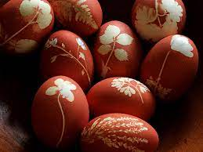
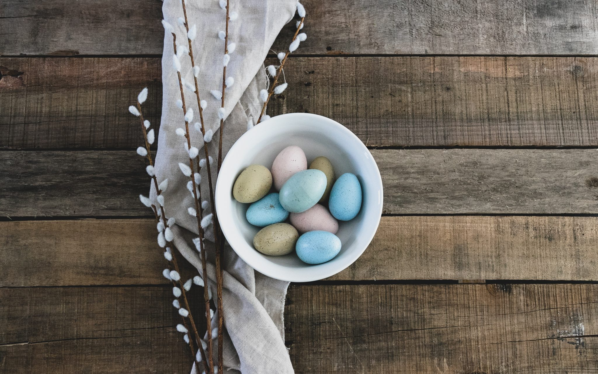
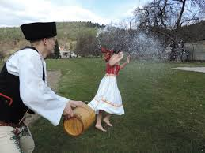
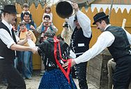

A húsvét a kereszténység legnagyobb ünnepe, a Krisztus-központú kalendárium központi főünnepe. Az
Újszövetség szerint Jézus – pénteki keresztre feszítése után – a harmadik napon, vasárnap feltámadt.
Kereszthalálával nem szabadította meg a világot a szenvedéstől, de megváltotta minden ember bűnét,
feltámadásával pedig győzelmet aratott a halál felett. A valláson kívül is a tavaszvárás, a tavasz
eljövetelének ünnepe is, amelyet március vagy április hónapban (a Hold állásának megfelelően)
tartanak. A húsvétnak megfeleltethető az időben korábban kialakult zsidó vallási ünnep (héber nyelven
pészah), amely az egyiptomi fogságból való szabadulás ünnepe, ezért nevezik a szabadság ünnepének (hág
háhérut) is. A húsvét a pészahhal ritkán esik egybe, mivel a Hold járása szerinti naptár és a két
változó ünnep számításától függ. A húsvét egybeesik a tavaszi nap-éj egyenlőség idején tartott
termékenységi ünnepekkel is, amelyek eleme a feltámadás, az újjászületés. Az ünnep napjainkban sokak
számára a tavasz beköszöntének ünnepe, amely vallástalan tartalommal, a szabadban töltött szórakozást
jelenti, a húsvéti nyúl és a húsvéti tojás szimbólumaival.


Locsolkodás
Vízbevető, vízbehányó hétfőnek nevezték, ugyanis még ötven évvel ezelőtt is elterjedt formájában
vödörnyi vízzel locsoltak, vagy az itatóvályúba dobták a lányokat, akik a nemes alkalomra a legszebb
ruhájukban pompáztak. A városokban, illetve napjainkban a finomabb formája az elterjedt, amikor illatos
parfümféleséggel, locsolóvers elmondásával kell kiérdemelni a jutalmul kapott festett hímes tojást.
